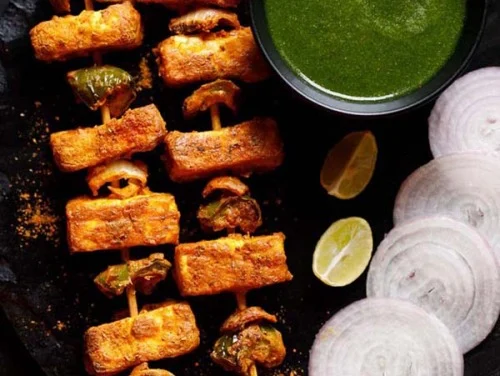
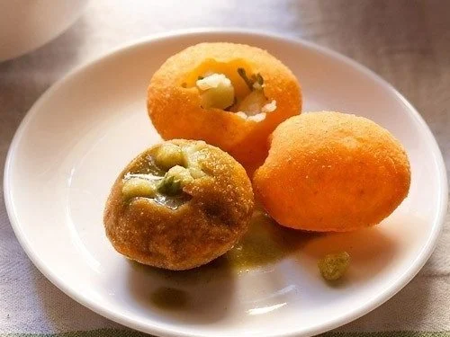
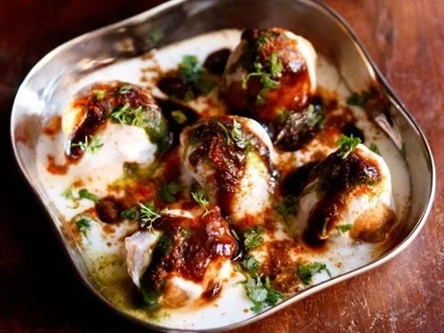

– This Restaurant Style Tandoori Paneer Tikka is
a popular and delicious tandoori where paneer (Indian cottage cheese cubes) are marinated in
a spiced yogurt-based marinade, arranged on skewers and grilled in the oven.. Few more
delicious paneer snacks recipes we have
Chilli Paneer
Chilli Cutlet
Chilli Pakoda
Chilli Sandwich

Pani Puri
– It is a popular street food of India, where crisp fried dough balls (puri) are stuffed with potatoes, sprouts, spicy tangy water or sweet chutney. With so many bursts of tastes and flavors in your mouth when you have pani puri, you just cannot have one 🙂

Dahi vada
– popular North Indian street food snack where lentil dumplings are dunked in a creamy whipped yogurt topped with spicy and sweet chutneys. Dahi bhalla are slightly different from dahi vada. In dahi bhalle, papdis, boiled potato cubes & cooked chickpeas are added which add different textures, taste and flavor to the dahi bhalla.

Spring rolls
– a popular Chinese snack of vegetable spring rolls. If you have the wrappers ready, then making spring rolls is not difficult. You can make the Spring roll sheets at home or buy them from outside.
Veg Machurian
- Manchurian is a class of Indian Chinese dishes made by roughly chopping and deep-frying ingredients such as chicken, cauliflower, prawns, fish, mutton, and paneer, and then sautéeing it in a sauce flavored with soy sauce